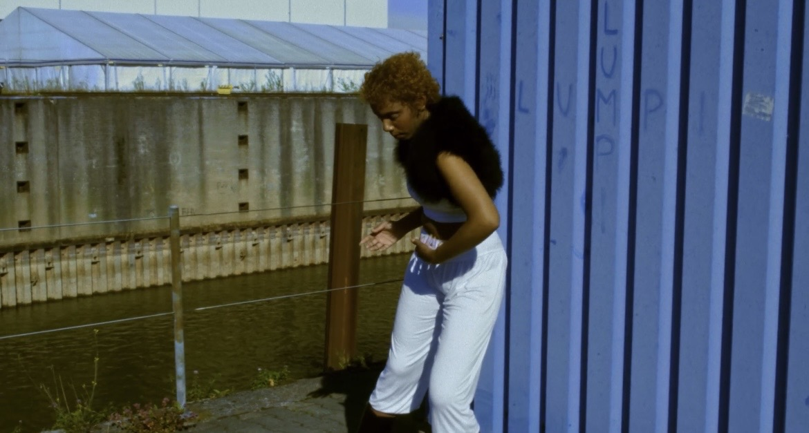
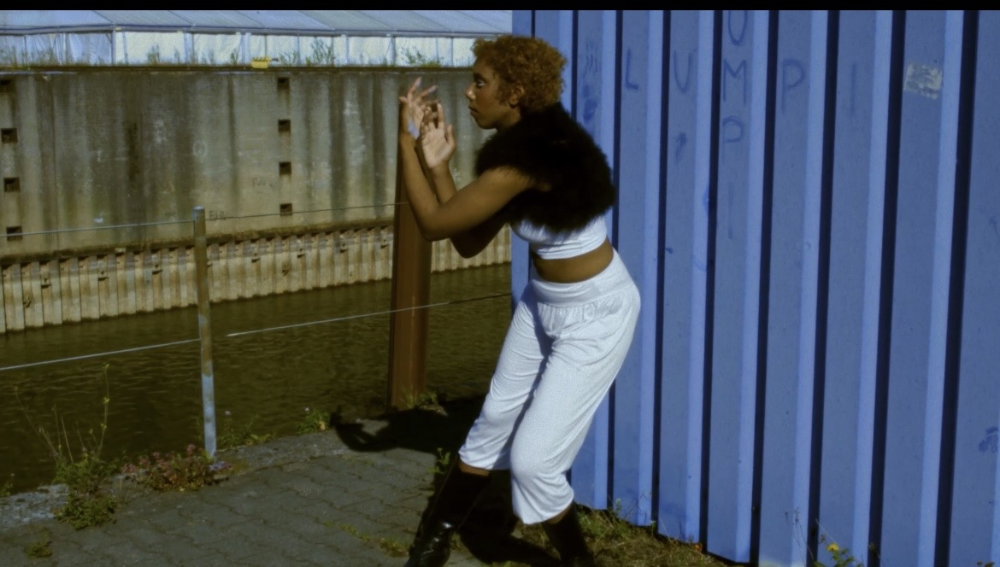
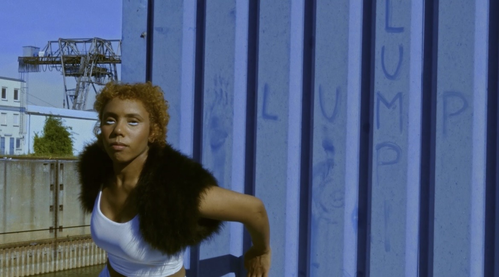
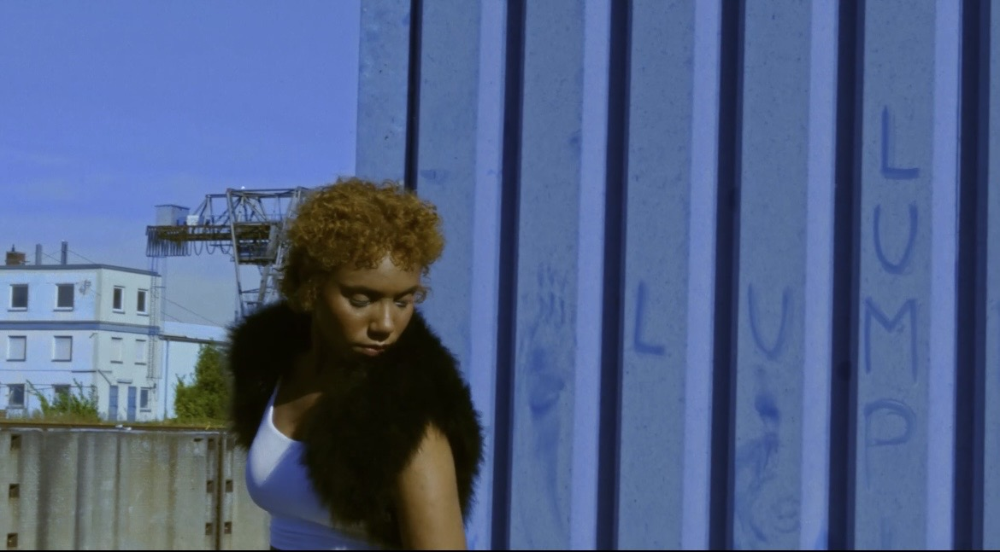
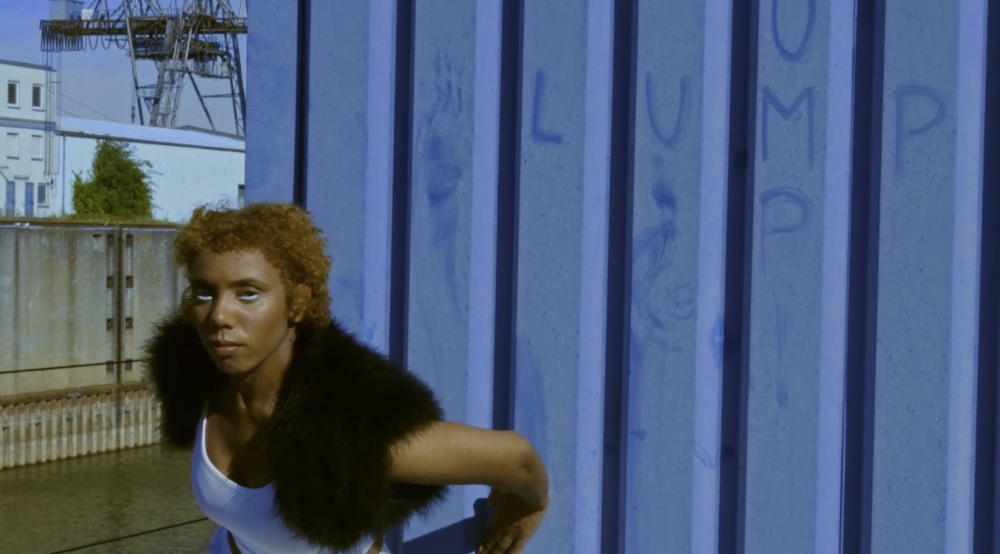

Performance film · 12:49
NET 5
Concept and choreography by Daniela Georgieva.
Storyboard
Eight selected stills








Performance film · 12:49
Concept and choreography by Daniela Georgieva.
Eight selected stills




